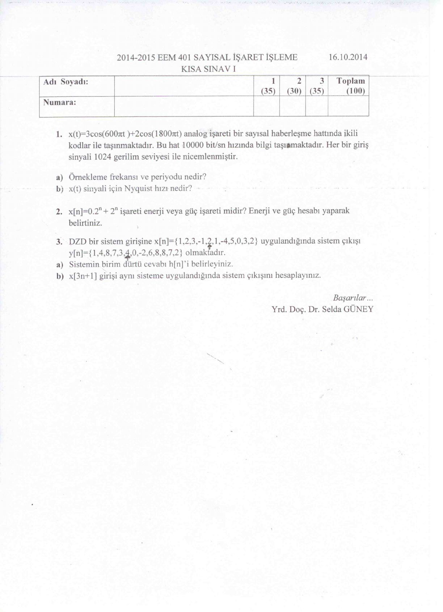
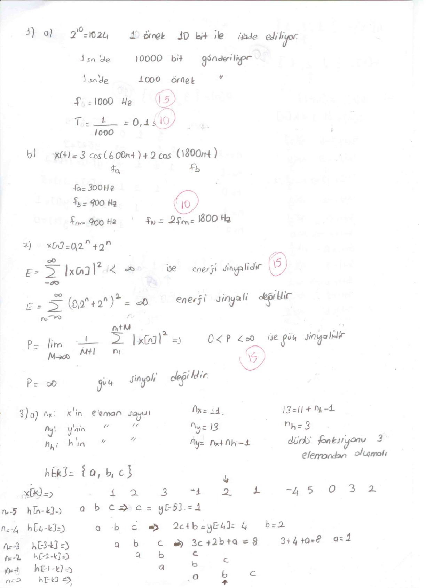
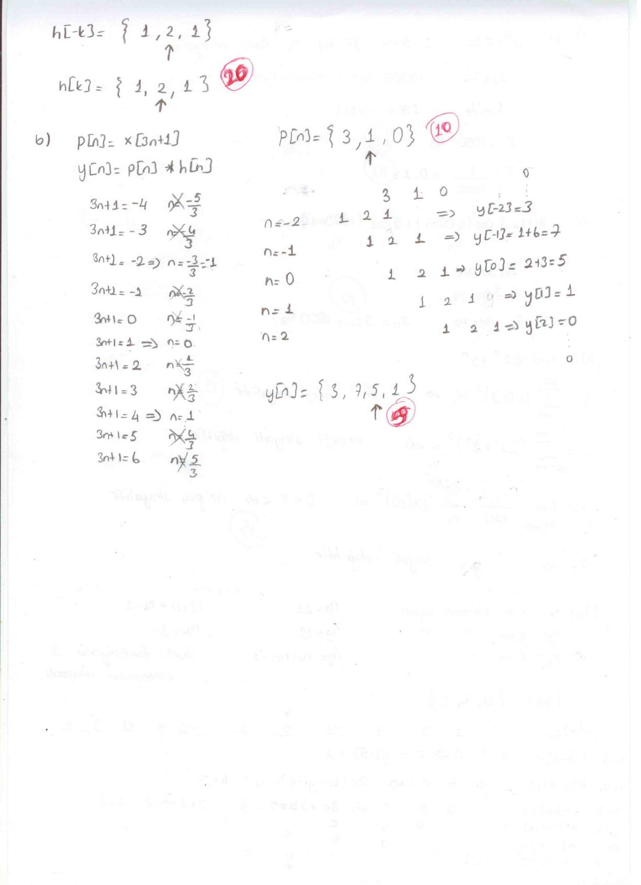

· EEM401
EEM401 Sayısal İşaret İşleme: Kısa Sınav I (16.10.2014) Soruları ve Çözümleri
EEM401 – Sayısal Sinyal İşleme · 16.10.2014 · 14.11.2026
EEM401 Sayısal İşaret İşleme dersinin 2014–2015 güz yarıyılı Kısa Sınav I'i (16.10.2014, Yrd. Doç. Dr. Selda Güney) ve benim notlandırılmış el yazısı kâğıdım. Sınav kâğıdının ad ve numara alanları boştur. Taranmış PDF yazının sonunda indirilebilir.
Sorular
- x(t) = 3cos(600πt) + 2cos(1800πt) analog işareti bir sayısal haberleşme hattında ikili kodlarla taşınmaktadır. Bu hat 10.000 bit/sn hızında bilgi taşımaktadır. Her bir giriş sinyali 1024 gerilim seviyesi ile nicemlenmiştir. (35 puan)
- a) Örnekleme frekansı ve periyodu nedir? - b) x(t) sinyali için Nyquist hızı nedir? 2. x[n] = 0,2ⁿ + 2ⁿ işareti enerji veya güç işareti midir? Enerji ve güç hesabı yaparak belirtiniz. (30 puan) 3. DZD bir sistemin girişine x[n] = {1, 2, 3, −1, 2, 1, −4, 5, 0, 3, 2} uygulandığında sistem çıkışı y[n] = {1, 4, 8, 7, 3, 4, 0, −2, 6, 8, 8, 7, 2} olmaktadır (kalın rakam n = 0). (35 puan) - a) Sistemin birim dürtü cevabı h[n]'i belirleyiniz. - b) x[3n + 1] girişi aynı sisteme uygulandığında sistem çıkışını hesaplayınız.
Çözüm
1a. 2¹⁰ = 1024 olduğundan her örnek 10 bitle ifade edilir. Hat saniyede 10.000 bit taşıdığına göre saniyede 1000 örnek gönderilir: fs = 1000 Hz; periyot Ts = 1/fs. Not: Ts = 1/1000 = 0,001 s = 1 ms'dir; el yazısı kâğıtta "0,1 s" yazılmıştır, doğrusu 1 ms.
1b. x(t) = 3cos(600πt) + 2cos(1800πt): fa = 300 Hz, fb = 900 Hz, en yüksek frekans fm = 900 Hz, Nyquist hızı fN = 2fm = 1800 Hz. Not: Hattın örnekleme frekansı (1000 Hz) Nyquist hızından düşük olduğu için bu işaret bu hatta örtüşmeyle iletilir.
2. Enerji E = Σ |x[n]|² = Σ (0,2ⁿ + 2ⁿ)² = ∞ (n → −∞'da 0,2ⁿ, n → +∞'da 2ⁿ ıraksar); bu yüzden enerji işareti değildir. Güç P = lim 1/(2M+1) Σ |x[n]|² = ∞ olduğundan güç işareti de değildir: işaret ne enerji ne güç işaretidir.
3a. x dizisinin 11 elemanı, y'nin 13 elemanı vardır. n_y = n_x + n_h − 1 olduğundan 13 = 11 + n_h − 1 ve n_h = 3. Evrişimin başladığı indekslerden (y[−5] = 1 = c, y[−4] = 4 = 2c + b, y[−3] = 8 = 3c + 2b + a) h = {a, b, c} bulunur: c = 1, b = 2, a = 1. Dürtü cevabı h[n] = {1, 2, 1} (n = −1, 0, 1).
3b. p[n] = x[3n + 1]: 3n + 1 değerinin x'in tanım aralığında kalan tamsayı n'leri n = −1 (x[−2] = 3), n = 0 (x[1] = 1) ve n = 1 (x[4] = 0). Yani p[n] = {3, 1, 0}. y[n] = p[n] * h[n] hesaplanınca: y[−2] = 3, y[−1] = 3·2 + 1·1 = 7, y[0] = 3·1 + 1·2 + 0 = 5, y[1] = 1·1 + 0·2 = 1, y[2] = 0. Yani y[n] = {3, 7, 5, 1} (n = −2 … 1).


